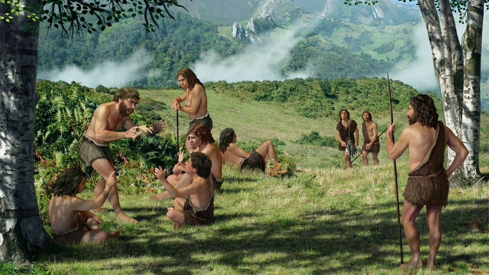
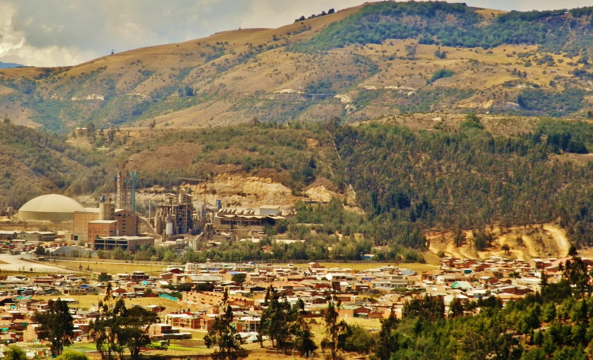

Periodo Prehistórico
En el periodo prehistórico, la región de Suesca fue habitada por comunidades indígenas que dejaron su huella a través de arte rupestre y herramientas primitivas. Estos primeros habitantes vivieron en armonía con el entorno natural.
Era Colonial
Durante la era colonial, Suesca fue influenciada por la llegada de los colonizadores españoles. La arquitectura y las construcciones de la época reflejan un periodo de cambio y adaptación cultural en la región.
Era Moderna
En la era moderna, Suesca experimentó un desarrollo significativo, con avances en infraestructura y una creciente población. Este periodo marcó la transformación de la región en un destino reconocido por su belleza natural y actividades al aire libre.
Época Contemporánea
En la época contemporánea, Suesca se ha consolidado como un destino turístico popular, famoso por su escalada en roca, senderismo y paisajes impresionantes. La preservación de su herencia cultural y natural sigue siendo una prioridad.